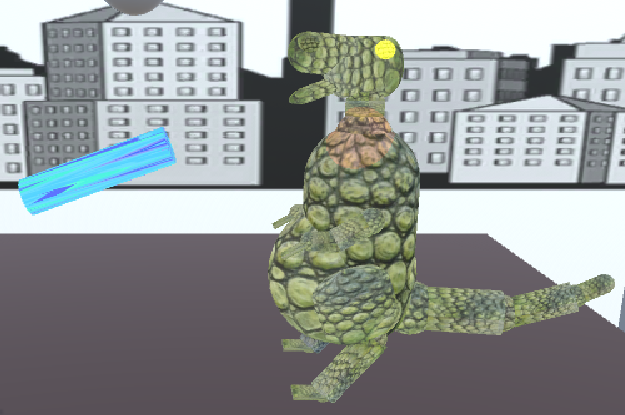
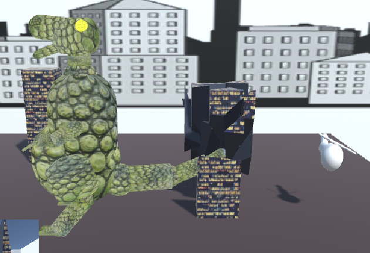
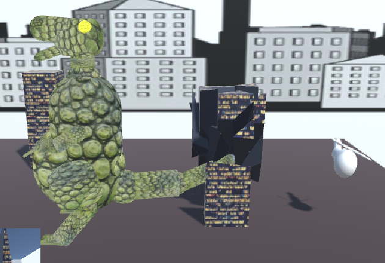

Developers Wendy Wen
Jeremy Gao
The Pianist
This project introduces an immersive 3D piano simulator, emulating a realistic piano practice experience with distinct sounds for each key. Users engage via a keyboard, controlling the virtual pianist's finger to play music. The simulator offers a user-friendly interface, dual viewing modes, customizable camera angles, two light sources, and two file textures with separate UV maps.
Assets we Used: "Piano and Digital Keyboard" (https://assetstore.unity.com/packages/3d/props/piano-and-digital-keyboard-216636).
Project proposal Final Demo Presentation Final Project EXE
Developers: Team 16
Parker FordJosiah Zacharias
App Name: Space Defenders
Asteroid Space Defenders is an interactive space defense game where players protect a space colony from incoming asteroids. Players control a laser turret from multiple perspectives, which has two weapons of control: main laser and rockets. The laser (LMB) has a max fire time and cooldown time, during which the rockets (RMB) can be used to fire on asteroids. Asteroids can collide with friendly ships, as well as friendly fire upon them, so be careful! The overall turret / colony health bar is shown below, and reticles and health bars in the scene help the user determine friend from foe.
Online Demo
Project proposal PPT Progress Demo Presentation Final Demo Presentation Final Project EXE
From Unity Asset Store: Huge Sci Fi Turret Pack - Tower Defense Kit, Breakable Asteroids, Space Station Free 3D Asset
Developers Adrian Albu
Jonathan Cho
Scary Maze Game
A Scary Maze Game where the objective is to navigate through a maze, find and press 3 buttons scattered around the map. Successfully pressing all 3 buttons will open a gate that will allow the player to escape. The main camera is in first person point of view and utilizes standard FPS controls (WASD) for camera and player movement. The secondary camera is an overall top-down view that captures the current state of the game. The arm is statically placed on the right side of the player camera and is manipulatable by pressing E. If you wish to view the options or settings, you may press ESC on your keyboard. Enjoy!
"Maze Generator" (https://assetstore.unity.com/packages/tools/modeling/maze-generator-38689) by styanton.
Sounds:
Project proposal Final Demo Presentation Final Project EXE
Developers Vanessa Arndorfer
Angelo Williams
Lost in the Dark
In Lost in the Dark, players control a character searching for the exit of a dark maze. The character movement is controlled by arrow keys and the characters individual limbs can be manipulated through the UI. Players have a flashlight at their disposal which can be used to locate switches along the maze walls. Some switches turn on lights for a local area while other switches are used to remove obstacles like lava pits and boulders. Wind through the maze, discover new challenges, and lead the way out of the darkness.
Assets we Used: "Stone Texture" (https://isorepublic.com/photo/stone-wall-texture/) Free stock image licensed under Creative Commons.
“Abstract golden orange background. Flashes in the sun, liquid fire. Flowing lava colors paint” (https://stock.adobe.com/search?k=lava+texture&asset_id=304093713).
Project proposal Final Demo Presentation Final Project EXE
Developers Pankti Bhaskar Shah
Brenda Sugey Vega Contreras
Single Player Ping Pong Game
This app is an interactive ping pong game where the user's goal is to achieve the highest possible score. A robot will pitch balls to the user, who can hit them back to the opposite side of the ping pong table. The user can control the racket position with the cursor and orientation with keys, and adjust the number of balls thrown and their speed. If the tracking option in the robot control is disabled, the user can also control the arm rotation. However, when the tracking option is enabled, the robot will automatically change its rotation to track the ball and hit it back to the user at random positions.
Project Proposal Write-up Project Proposal Presentation Final Demo Presentation Final Project EXE Final Project WebGL
Textures we used: "Wood Texture" (https://stock.adobe.com/search?k=seamless+wood+flooring) from Adobe Stock. License agreement (https://stock.adobe.com/license-terms).
"Winner Cup Texture" (https://www.vecteezy.com/free-vector/winner-cup) from Vecteezy. License agreement (https://www.vecteezy.com/licensing-agreement).
Developers Austin Yao
James Truong
Kiiiiicking Kans
This application allows the user to play a game that models a soccer penalty kick. The user plays as a stack of cola kans kicking the soccer ball. Dragging with the mouse kicks the ball in the opposite direction with a similar magnitude to the length of the drag. Pressing or clicking ESC can bring up the pause menu. The user can kick a curved ball in the direction rotated by pressing Q or E on the keyboard, clicking the UI buttons, or using mouse scroll. Scoring is based on how many consecutive goals made, how complex the ball path was to make the goal, and where the ball entered the goal. Each goal creates a blocking can that will move randomly in a fixed area to prevent further goals.
Project Proposal Final Demo Presentation Final Project EXE Final Project WebGL
Assets:
Soccer Ball Indicator
Cola Can Skin on Cylinder
Cola Can Head
Grass Field
Sky/Night
Sounds:
BallKick from Pixabay
MetalBar from Pixabay
FootBall/Grass from Pixabay
hittoCan from Pixabay
2013Sound Effect from Pixabay
pbrSound Effect from Pixabay
plhit2Sound Effect from Pixabay
Grass1 from Pixabay
SocStaduim10 from Pixabay
Explosion from Pixabay
Arcade from Pixabay
Track BGM Potential:
IndieFolk by Pavel Bekirov from Pixabay
Game by Alba MacKenna from Pixabay
HighVoltage by Julius H. from Pixabay
Happy Travel by Oleksii Holubiev from Pixabay
Developers
Michael Jacobs
Tabitha Roemish
App Name: Godzilla
This application allows a user to move Godzilla using arrow keys and fire atomic breath by hitting the spacebar or using the "Atomic Breath '' button. Godzilla can interact with the buildings around him by swinging his tail into the structures to destroy them or by firing Atomic Breath at them. Godzilla's Atomic Breath has an animated texture that can be turned on and off in the panel on the right. There is a helicopter that rotates around Godzilla which contains a camera and spotlight. The camera view can be seen on the viewport in the bottom left corner. The view can be manipulated by changing the helicopter height and distance. The lighting is controlled in the panel to the right. The user has the ability to change the directional light setting to day or night. Additionally, the user can shut off the helicopter's spotlight.

 

Project Proposal Final Demo Presentation Final Project EXE
Marina Rosenwald
Play as a snowman and manipulate objects to help decorate for the upcoming holidays!
Use the arrow keys to move the snowman around his room.
Use alt + your mouse to: Dolly, tumble, and track the scene view camera
UI features to manipulate: (T, S, R) the wallpaper texture (S, R) the snowman’s SceneNodes
Keys: Arrow keys to move
R: reset the scene
C: change camera
T: enable/disable wallpaper manipulation UI
Space: enable/disable SceneNode manipulation UI
References:
- Moving object with click and drag: Stack Overflow - Unity Drag with Right Mouse Button
- Camera switch:
- Polar bear: Omabu Arts - Polar Bear Quirky Series
- Snow texture: Freepik - Snow Texture
- Texture 1: Freepik - Christmas Pattern Seamless
- Texture 2: Freepik - Christmas Pattern Christmas Texture
- WoodFine Texture: Textures.com - WoodFine Texture
- Pine Tree Texture: Christmas Tree Branches Background Stock Illustration - Textured, Christmas Tree, Pine Tree - iStock
Swanand Wagh
Prathamesh Bhalange
3D Tower Builder
The game typically involves stacking blocks on top of each other, aiming to create the tallest tower possible without it collapsing. The challenge lies in finding the right balance and stability to keep the tower standing as it grows taller and more unstable with each added block. Beware of dropping bombs on the tower!


Assets we Used: Tower-Block | TNT | Mustang Car from sketchfab.com AND Fantasy SkyBox | Texture | Playground from Unity Asset Store.
Project proposal Final Demo Presentation Final Project EXE
Developers Victor Long
Alan Lai
Gravity Explorer
This is a tool to show how different gravities affect falling objects on different planets.
The robot is a custom scene node hiearchy and lit via a custom shader developed during the class.
Users can spawn flashlights that will light the robot. Users can switch to different planets to see their different planetary textures and affect the falling objects.
Assets we Used:
Planets, stars, and planet textures are from images.nasa.gov
Robot - https://assetstore.unity.com/packages/3d/characters/robots/robot-sphere-136226
Flashlight - https://assetstore.unity.com/packages/3d/props/electronics/flashlight-18972
LuxoBall - https://sketchfab.com/3d-models/pixar-luxo-ball-c141141280134fbd8739891da5d2fbb7
SciFi GUI from https://assetstore.unity.com/packages/2d/gui/sci-fi-gui-skin-15606
Final Demo Presentation WebGL Link
Developers
Team 3, Autumn 2023
Pinball Interactions
This tool is used to control two opposing paddles and a plunger that can collide with a Unity physics system ball. Textures are applied to the created hierarchy items, as well as a point and directional light for the scene. The point light is the pinball. The ball and manipulated hierarchy items can be reset. There are Unity to Unity object interactions, and Unity to Hierarchy interactions.
Packages Used: "TextMesh Pro"(https://docs.unity3d.com/Packages/com.unity.textmeshpro@4.0/license/LICENSE.html) Licensed under the Unity Companion License for Unity-dependent projects.
Project proposal Final Demo Presentation Final Project EXE
Developers Aravind Tallapragada
Pamela Cheema
Tank Battle
This is an application that demonstrates a tank interacting with other objects both directly and indirectly. There are three main parts to the tank structure which are the tank body, the turret, and the cannon launcher. We support movement of the tank body to move forward and backward, rotation of the turret to move right and left, and rotation of the cannon to move up and down. One camera displays a top view of the scene and follows the tank's movements and a second camera is attached to tip of the cannon to offer a second view. We support the ability to switch between the two camera views as the main (larger) view displayed. Finally, the cannon has the ability to shoot projectiles that change the color of the auto-generated targets when hit.
Project proposal Final Demo Presentation Final Project EXE